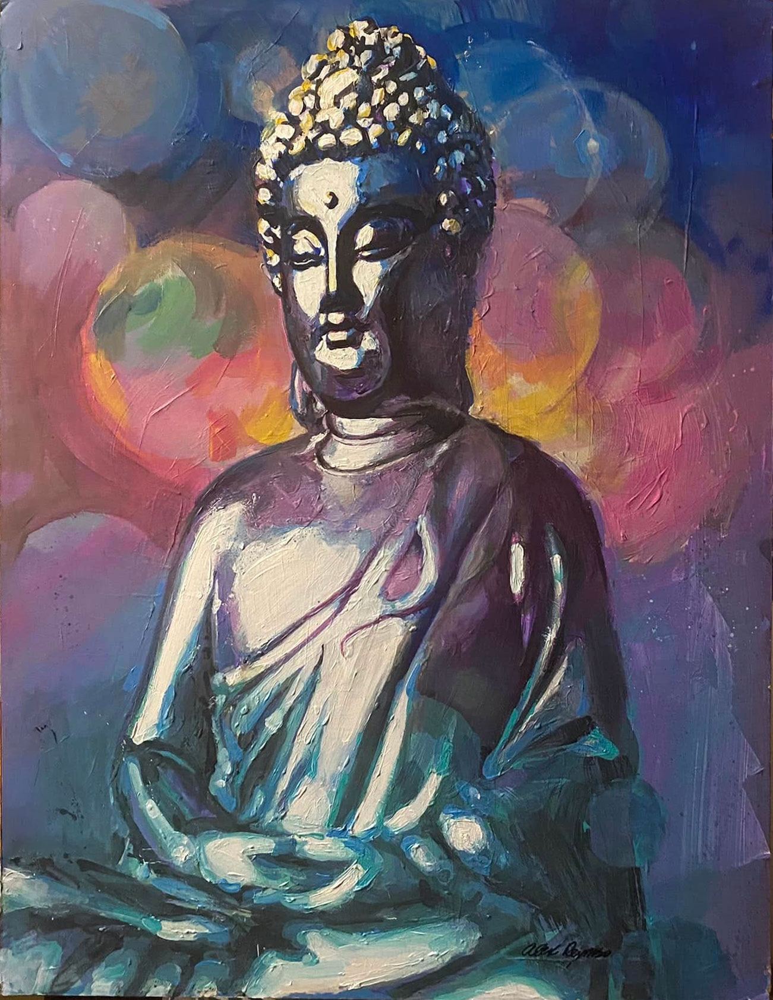

Gratitude and Joy, Buddha
2022

About the Artwork
Gratitude and Joy, Buddha is a 2022 acrylic painting exploring stillness, color and reflection through the seated Buddha figure.
The painting developed over several stages, beginning with a purple, cream and gray palette before expanding into layers of blue, teal, pink and gold. Work in progress was documented in January 2022, with the finished painting shared in October 2022.